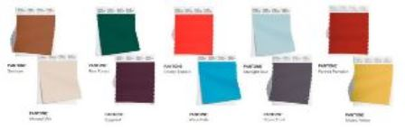

Останні тренди
Дізнайтеся про найновіші тренди в світі моди.
- Повернення до елегантності та витонченості: Після кількох років домінування спортивного та вуличного стилю, у 2025 році спостерігається повернення до більш класичних та елегантних силуетів. Це проявляється у витончених костюмах з м'якими лініями, жіночних сукнях, елегантних блузах та спідницях-олівцях.
Акцент робиться на якісних тканинах, стриманих кольорах та лаконічному дизайні.
- Новий погляд на денім: Денім залишається популярним, але набуває нових форм та інтерпретацій. У тренді будуть широкі джинси, джинсові спідниці максі, комбінезони та комплекти з деніму.
Особлива увага приділятиметься екологічно чистому деніму та переробленим матеріалам.
- Яскраві кольори та сміливі принти: Поряд зі стриманою елегантністю, у 2025 році буде актуальним одяг яскравих кольорів та з оригінальними принтами. Особливо популярними будуть насичені відтінки рожевого, блакитного, зеленого та жовтого.
Щодо принтів, то в тренді будуть абстрактні візерунки, геометричні фігури та флористичні мотиви.
